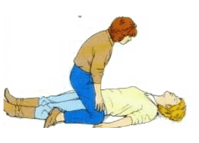

ماهو الاختناق
هو عدم وصول الهواء وبمعنى أدق عدم وصول الأكسجين إلى الجهاز التنفسي و الرئتين للشخص المصاب، ويحدث فيه صعوبة شديدة في التنفس
-
- حرك المصاب وضعه على ظهره ، بمساعدة المحيطين.
- ارفع ذقن المصاب مع إرجاع الرأس إلى الوراء وامسك جبهته بيدك.
- ادفع على جبهة الشخص أو فكه.
- في هذه الحالة قد يعود اللسان إلى وضعه الطبيعي، قم بتغيير وضعه واجعله مستلقِ على جانبه.
بلع اللسان
-
- إغماء وحالة تسبق الإغماء وهي الدوار أو كما يطلق عليها بالعامية الدوخة.
- شحوب الوجه واصفراره.
- برودة أطراف الأصابع ، وتميل للون الأزرق.
أعراض الاختناق
-
- قم بنقل الشخص المصاب من المكان الذي سقط فيه ، إلى مكان جيد التهوئة، إن كان المصاب سيدة محجبة فك الحجاب قليلاً من جهة الحلق.
- يجب خلع الملابس الضيقة عند العنق والصدر، ليصل له التهوئة.
المعالجة العامة
-
اللاختناق بسبب الغرق
- نفس الاعراض العامة للاختناق
- ظهور الزبد حول فم المصاب وانفه
الاعراض
-
المعالجة
- قم بتحريك رأس الغريق بحيث يكون الرأس في الأسفل، قم برفع القدمين لأعلى.
- اضغط على المنطقة أعلى البطن لتدفع الماء بقوة خارج الرئتين.
- اخرج من فم المصاب بسرعة كل مايمكن ان يسد مسلك الهواء كالاعشاب البحرية وابدء التنفس الاصطناعي فورا
- قد بتدفئة المصاب وذا امكن انزع ملابسه المبللة وجففه وغطيه باغطية اضافية او مناشف
- اعمل على نقله الى المستشفى
-
-
-
الاعراض والعلامات
- الاعراض العامة للاختناق
- لا يتمكن المصاب من الكلام او التنفس وربما امسك بعنقه وان ابرز مايميز هذه الحالة هو ان المصاب يسكت تماماً
- احتقان الوجه والعنق وبروز الاوردة وازرقاق الشفتين والفم
- احتمال فقد الوعي
-
- المعالجة
- اخرج اي بقايا او اسنان اصطناعية من فم المصاب بإصبعيك وحثه على السعال
- إذا لم يتزحزح الجسم الغريب بالسعال ساعد المصاب على الانحناء بحيث يكون رأسه ادنى من رئتيه اضربه بقوة على عظمتي الكتفين براحة يدك وكرر ذالك اربع مرات اذا لزم الامر
- افحص الفم هل تزحزح الجسم المسبب للانسداد فإذا لم يحصل اي شي من ذالك فقد تتمكن من اخراجه بالضغط على البطن
- افحص الفم مرة اخرى ,فإذا كان الجسم المسبب للشرق موجود ولم يخرج قم باخراجه بإصبعيك
- اذا لم ينته الشرق أعد مرة اخرى الضرب على الضهر حتى اربع ملات وضغط على البطن حتى اربع مرات واذا اصبح المصاب فاقداً لوعيه عالجه كما هو مبين ادناه
-
- ضع المصاب على ظهره ,وافتح مسلك الهواء لديه وابدأ التنفس الاصطناعي
- اذا لم تصل الى نتيجة مقبولة ,ضع المصاب على جانبه بحيث يواجهك ويكون صدره مستنداً الى فخذك ورأسه مائلا الى الخلف واضربه حتى اربع ضربات على ضهره كما مبين ادناه
- افحص الفم لترى هل تزحزح الجسم المسبب للشرق , فإذا حدث ذالك اخرجه بإصبعيك ولا فضع المصاب في وضع الاستلقاء على ضهره مع الاحتفاظ بالرأس في وضع فتح مسلك الهواي واضغط على البطن
- افحص الفم مرة اخرى لترى هم تزحزح الجسم الغريب
- اذا استمر الشرق عدّل وضع رأس المصاب وحاول إجراء التنفس الاصطناعي وبعد ذالك كرر الخطوات اعلاه
- عندما يُستخرج الجسم الغريب ويعود المصاب الى التنفس ضعه في وضع الافاقة واعمل على نقله الى المستشفى
*بالنسبة للمصاب بالشرق الفاقد للوعي

-
- اتبع الخطوات نفسها الموصوفة لبالغين ولكن اجلس على كرسي او اركع على ركبة واحدة وضع الطفل على ركبتك ورأسه الى الاسفل , اسند الصدر بإحدى يديك واضرب الطفل بقوة بين عظمتي الكتفين باليد الاخرى حتى اربع مرات فإذا لم يتزحزح الجسم الغريب فقد يحتاج الامر الى استعمال ضغط البطن وذا كان الطفل فاقداً للوعي فأتبع نفس الخطوات التي وصفت بالنسبة للبالغين الفاقدين الوعي
*بالنسبة للشرق عند الاطفال

-
- ضع الرضيع على ساعدك ورأسه وصدره وبطنه متجهين الى الاسفل اضرب بقوة بين الكتفين اربع ضربات ,فإذا لم يخرج الجسم الغريب يصبح ضرورياً القيام بضغط البطن
*الشرق عند الرّضع
-
- قف او اركع خلف المصاب وضع احدى ذراعيك حول بطنه .اطبق قبضة يدك وضعها مع ابهامك متجهة نحو الداخل في منتصف القسم العلوي للبطن بين السرة وعظم القص
- امسك قبضة يدك باليد الثانية
- اسحب يديك الاثنين نحوك مع القيام بضغط سريع نحو الداخل والى اعلى من المرفقين بشكل يحدث ضغطا على القسم العوي للبطن .ويجب ان يكون الضغط شديداً لدرجة تكفي لزحزحة الجسم الساد ,فإذا اخفقت كرر ذالك حتى اربع مرات حسب الضرورة
* الضغط على البطن بالنسبة للبالغين
-
- ضع المصاب على ضهره بحيث يكون رأسه في وضع فتح مسلك الهواء اركع منفرج الساقين فوق فخذي المصاب بشكل يمكنك من تطبيق ضغط كافي في المكان الصحيح بمنتصف البطن ,فإذا لم تتمكن من احتواء المصاب بس ساقيك فأركع الى جانبه 
- ضع قاعدة إحدى يديك في منتصف القسم العلوي لبطن المصاب ,ثم ضع يديك الثانية فوقه مع ابعاد الاصابع عن البطن
- مع المحافظة على ساعديك مستقيمين اضغط البطن بسرعة نحو الداخل والى الاعلى ,ويجب ان يكون الضغط قوياً لدرجة تزحزح الجسم الساد وذا اخفقت كرر الضغط اربع مرات
الضغط على البطن بالنسبة للمصاب الفاقد للوعي *
الشرق
-
-
- اشر على المصاب بأن يجلس مع ميل خفيف الى الامام ,وان يتكئ على مسند كطاولة مثلا , وهيئ له مكان به هواء منعش
- اذا كان المصاب يحمل علاجه ,فدعه يستعمله ,فقد يخفف المه
- اذا استمرت الاعراض او تكررت اطلب العون الطبي
الربو